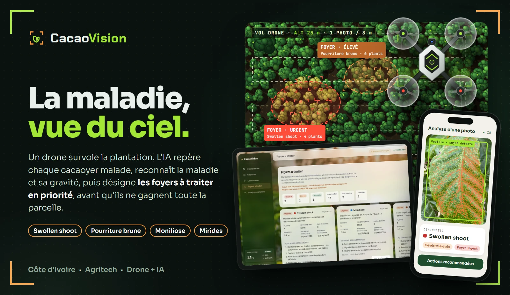
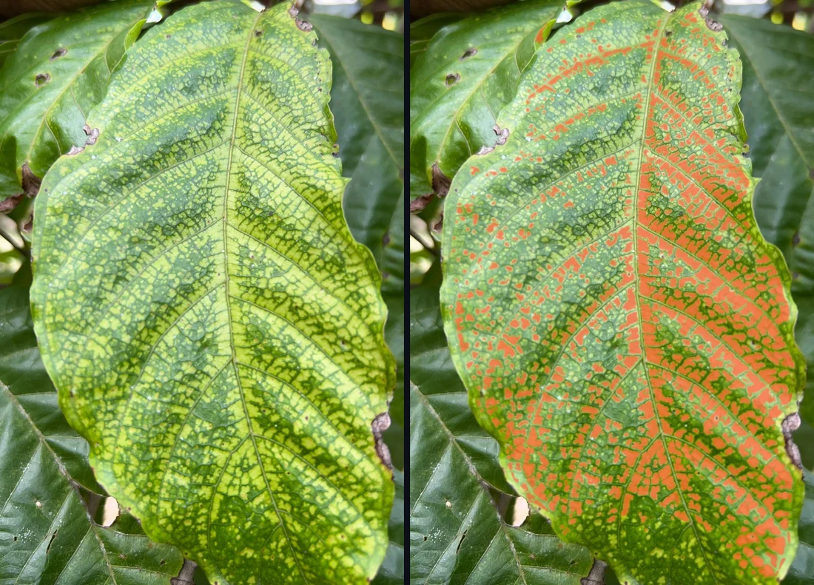
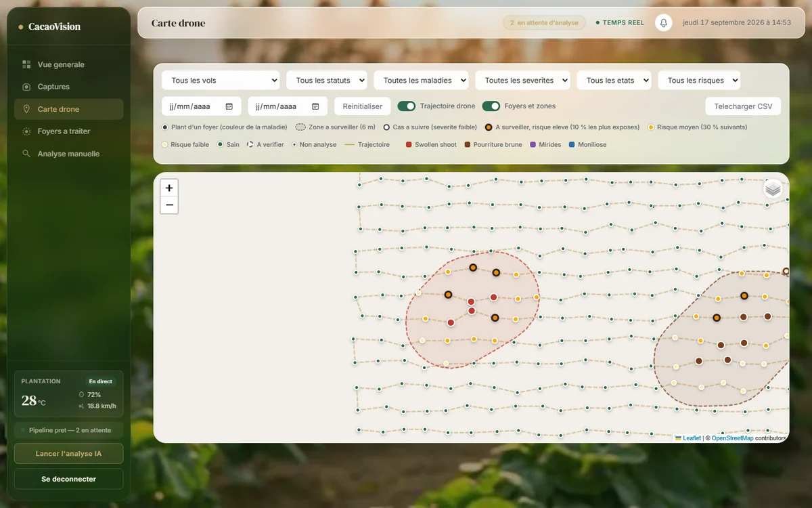
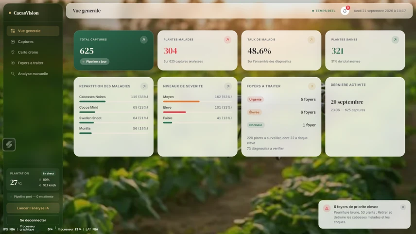
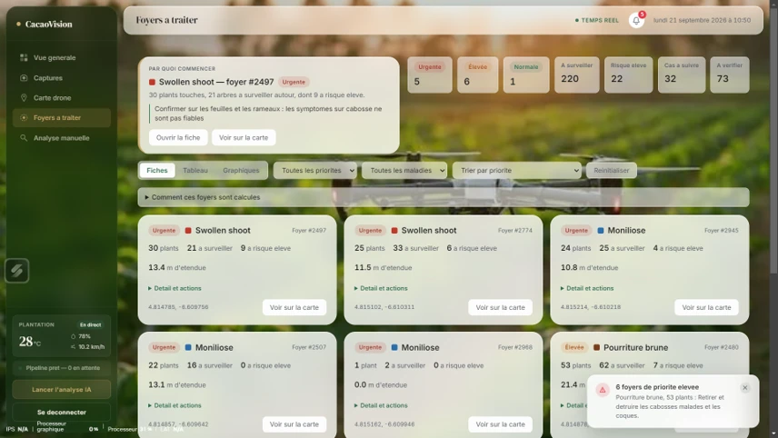

Projet · Agritech · Intelligence artificielle
Un système de surveillance des plantations de cacao par drone et intelligence artificielle. Le drone photographie chaque cacaoyer, l'IA reconnaît la maladie et sa gravité, puis désigne les foyers à traiter en priorité, avant qu'ils ne gagnent toute la parcelle.

Le problème
La Côte d'Ivoire est le premier producteur mondial de cacao. Dans les plantations, les maladies passent d'un arbre à l'autre, et un planteur ne peut pas inspecter chaque cacaoyer à l'œil, régulièrement, sur plusieurs hectares.
Maladie virale transmise par des cochenilles. Les arbres atteints doivent être arrachés : plus le foyer est trouvé tôt, moins on en perd.
Le champignon se répand par les éclaboussures en saison des pluies. Retirer vite les cabosses atteintes limite la contagion.
Taches sur les cabosses, piqûres d'insectes : des symptômes faciles à manquer quand on parcourt la plantation à pied.
Comment ça marche
Chaque photo passe par cinq étapes, confiées à des modèles d'IA puis à des règles de terrain.
Le drone suit un trajet en serpentin au-dessus de la parcelle et prend une photo géolocalisée tous les 3 m. Un technicien peut aussi photographier une feuille ou une cabosse avec son téléphone.
L'IA repère la feuille ou la cabosse dans l'image et écarte le reste (ciel, sol, branches), pour que le diagnostic porte sur la bonne zone.
YOLO26
Un premier modèle trie les plants sains et malades, un second reconnaît la maladie parmi quatre. Quand l'IA n'est pas assez sûre, le cas est marqué « à vérifier » au lieu d'être compté.
MobileNetV3 · EfficientNet-B0
L'étendue des lésions et d'autres indices donnent un niveau de sévérité : faible, moyen ou élevé.
XGBoost
Les plants malades de la même maladie à 6 m ou moins forment un foyer. Chaque foyer reçoit une priorité et les actions recommandées par la filière. Les arbres voisins sont classés selon leur risque d'être touchés, en tenant compte de la météo.
Règles du mémoire · météo Open-Meteo
Ce que voit l'IA

Le swollen shoot jaunit la feuille entre les nervures. Ce sont ces zones que l'analyse isole pour estimer la gravité de l'atteinte.
Le résultat arrive sur le téléphone : la maladie, sa sévérité et, si le plant fait partie d'un foyer, son niveau d'urgence.
Le tableau de bord
Le responsable suit les vols, voit les foyers sur la carte et sait par où commencer.



Captures réalisées avec des données de démonstration.
Pour qui
Savoir quels arbres sont atteints et quoi faire, sans parcourir toute la parcelle.
Suivre l'état de plusieurs plantations et organiser les interventions là où elles comptent.
Confirmer les cas signalés et appuyer les planteurs avec un diagnostic déjà localisé. L'application ne prescrit aucun produit : ce choix revient à l'encadrement agricole.
Réalisation
Mon rôle : conception et développement complet. Entraînement des modèles (détection, classification, sévérité), règles des foyers et du risque, API, tableau de bord, application web de capture sur téléphone, simulateur de vol et tests. Sujet de mon mémoire de Master en IA à l'Université Félix Houphouët-Boigny, mené chez SaH Analytics.
Démonstration
Le code source est privé. Je présente volontiers la plateforme en direct, avec un vol simulé et l'analyse complète.